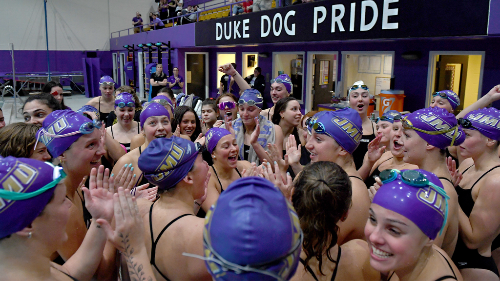
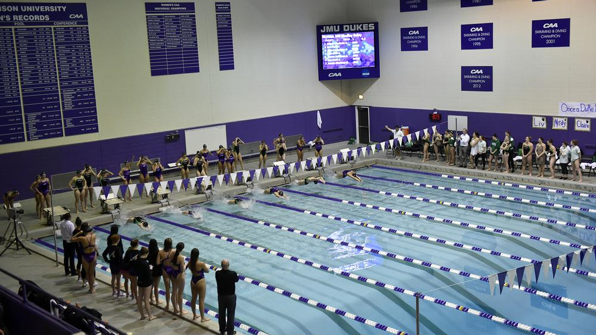

James Madison Swim & Dive

The James Madison Women's Swim and Dive team is the Division I intercollegiate women's swim and dive program representing James Madison University. The program boasts 12 Colonial Athletic Association conference titles in its 58 year history. The Dukes compete at the Savage Nataorium in Godwin Hall, an eight-lane, 25-yard facility with two 1-meter boards, two 3-meter boards and seats for 800 spectators.
Stadium

| Name | Built | Capacity |
|---|---|---|
| Savage Nataorium | 1972 | 800 |